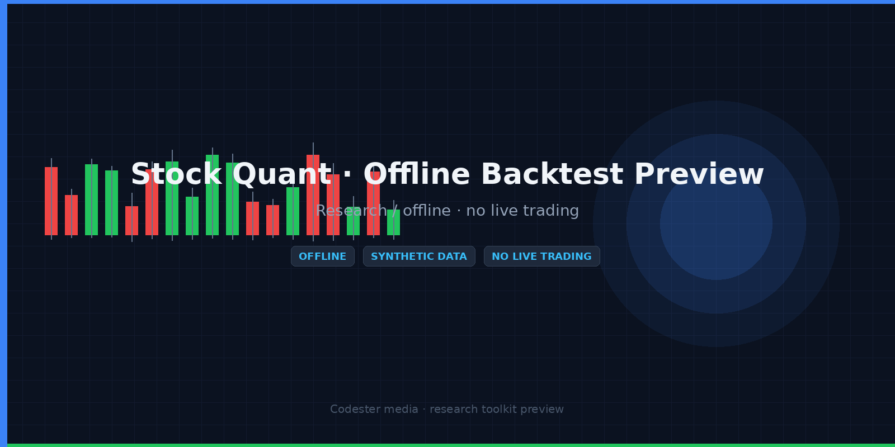
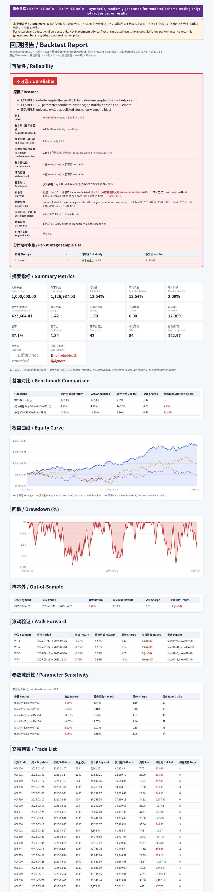

A compact, dependency-free Node.js kit for offline daily-bar backtesting in research and education workflows. Ships with a deterministic synthetic demo dataset, verification script and English usage notes.

ma_cross, breakout, grid, mean_reversion, momentum_rotation, trend_banddataQuality section in every report1. Unzip the kit and run the built-in checks (synthetic/offline checks only):
node verify.js
2. Run the synthetic demo, which writes demo-report.json:
node demo.js # or: npm run demo / npm test
3. Use your own daily bars (date, open, high, low, close, volume):
const { BacktestEngine } = require('./src/autotrade/backtest');
const engine = new BacktestEngine({ initialCapital: 100000, commission: 0.0003,
minFee: 5, stampTax: 0.001, slippage: 0.001, positionSize: 0.2, tPlusOne: true });
const report = engine.runWithBars('ma_cross', '000001', startDate, endDate, bars);
// always inspect report.error and report.dataQuality
Example only
'000001' is a placeholder six-digit code used by the bundled synthetic demo, not a recommendation. Default cost values are illustrative, not verified broker or tax rates.A simplified in-browser illustration of a moving-average-cross backtest on the same deterministic synthetic bar formula the kit's demo uses (240 calendar-day bars, not real prices). This is a lightweight re-implementation for preview purposes, not the kit's full engine; numbers will differ from the kit's report.
All values below are synthetic example output and say nothing about real market performance.
Grey: synthetic price (left scale normalized). Blue: example equity curve.The kit's JSON report can be rendered as an HTML report. Example rendered with synthetic, randomly generated data:
Open the example HTML report (EXAMPLE DATA) →

This page is a preview; the full source is included only in the downloadable kit.